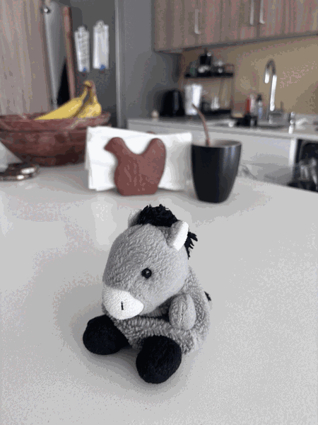

UC Berkeley CS 280A
Computer Vision and Computational Photography

1
Project 1: Images of the Russian Empire — Colorizing the Prokudin-Gorskii Photo Collection
2
Project 2: Fun with Filters and Frequencies
3
Project 3: Fun with Diffusion Models
4
Project 4: (Auto)stitching and Photo Mosaics
5
Project 5: Final Project